🎬 Explainer videos
VAE-Triage (3.6 min)
High-resolution segmentation
🔬 VAE-Triage — edge-first WSI triage
A whole-slide image is ~1010 pixels and ~70% of it is glass. The gate reads the pyramid lazily, removes glass on a thumbnail, scores every 20× tile with a GMM density over 23 physical features (focus, stain, ink, folds, noise), separates tissue components, and sends only good tissue to the heavy model.
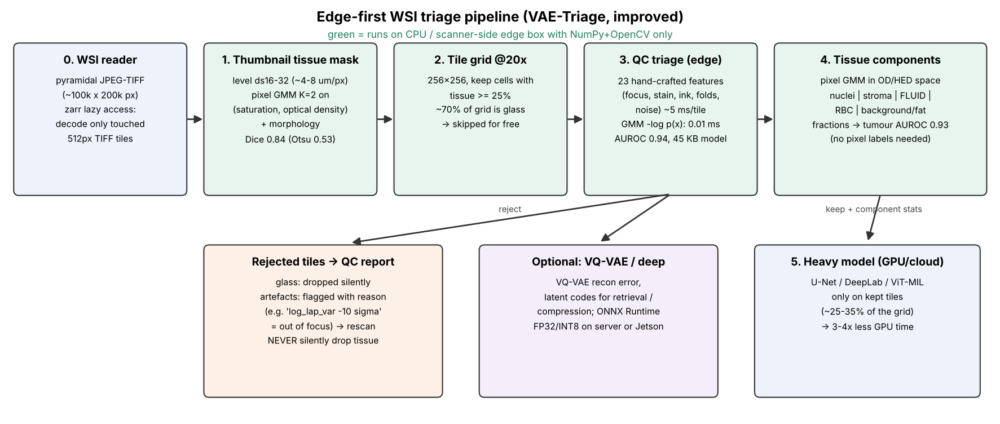
Stage 1 — tissue detection
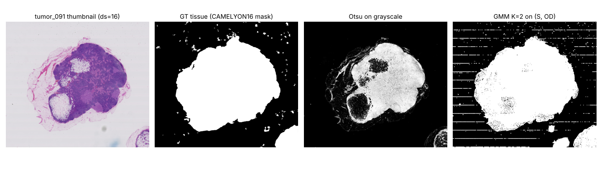
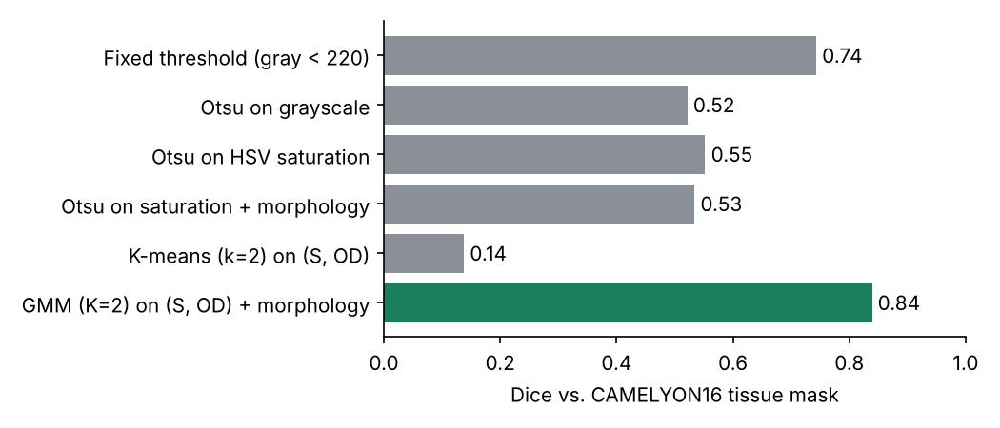
| Method | Dice | IoU |
|---|---|---|
| Fixed threshold (gray < 220) | 0.743 | 0.604 |
| Otsu on grayscale | 0.522 | 0.364 |
| Otsu on HSV saturation | 0.552 | 0.398 |
| Otsu on saturation + morphology | 0.534 | 0.381 |
| K-means (k=2) on (S, OD) | 0.138 | 0.078 |
| GMM (K=2) on (S, OD) + morphology [ours] | 0.839 | 0.746 |
Stage 2 — tile quality control
Test: 2290 clean tiles vs 600 glass + 1500 artefact tiles on 4 unseen slides; thresholds calibrated on unseen training slides.
| Method | AUROC | F1 | Specificity | Tumour rejected |
|---|---|---|---|---|
| Laplacian variance (focus) | 0.759 | 0.665 | 0.929 | 0.4% |
| HistoQC-style rule set | 0.857 | 0.620 | 0.971 | 0.4% |
| Single Gaussian (Mahalanobis, K=1) | 0.954 | 0.906 | 0.932 | 0.6% |
| GMM (K=4) same-slide calibration [pitfall] | 0.942 | 0.828 | 0.687 | 43.1% |
| GMM (K=6, slide-CV) LOSO calibration [ours, final] | 0.939 | 0.897 | 0.928 | 3.5% |
| Isolation Forest | 0.913 | 0.780 | 0.929 | 0.4% |
| Random forest (supervised) | 0.960 | 0.895 | 0.865 | 2.0% |
| VQ-VAE recon-MSE (LOSO-calibrated threshold) | 0.376 | 0.286 | 0.941 | 2.0% |
| ResNet18-ImageNet feats + PCA32 + GMM(K=4) | 0.769 | 0.309 | 0.928 | 4.3% |
| MobileNetV3-Small supervised QC | 0.976 | 0.926 | 0.873 | 5.1% |
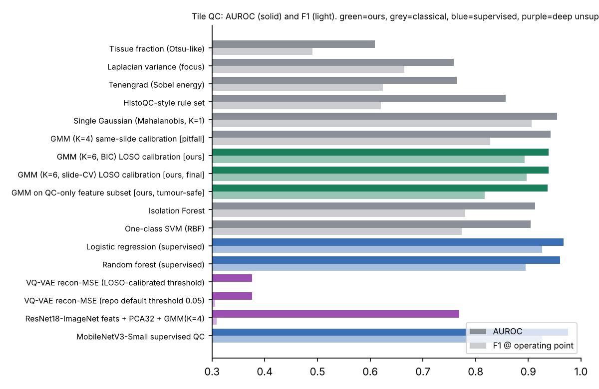
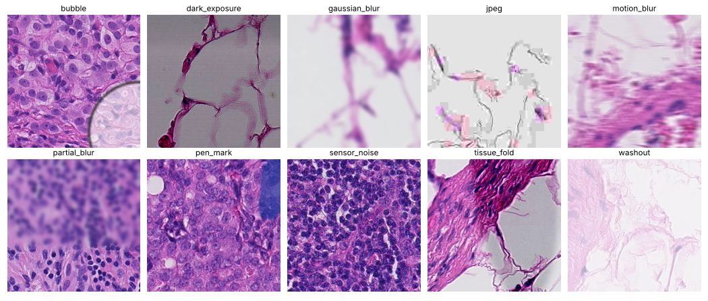
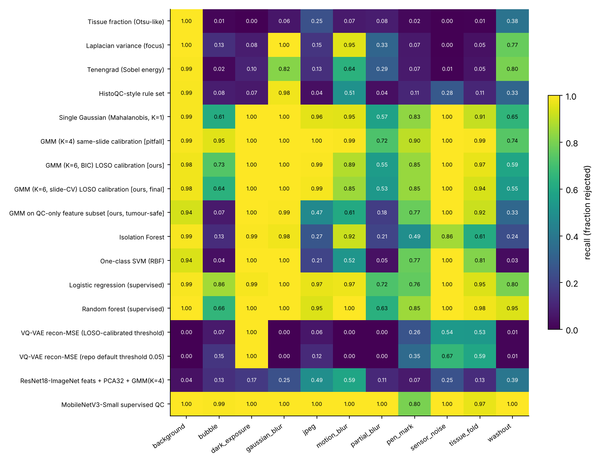
Why unsupervised: artefacts never seen in training
| Model | bubble | pen ink | fold | JPEG |
|---|---|---|---|---|
| Logistic regression (supervised, 6 artefact types seen) | 13% | 64% | 41% | 46% |
| Random forest (supervised, 6 artefact types seen) | 7% | 64% | 24% | 22% |
| GMM K=1 (no artefact ever seen) | 61% | 83% | 91% | 96% |
| GMM K=6 (no artefact ever seen) | 64% | 85% | 94% | 99% |
💧 GMM tissue components & fluid separation
Beer–Lambert optical density → colour deconvolution into haematoxylin and eosin → pixel GMM on [H, E, OD, a*, local std]. The pale, eosin-dominant, low-OD component is fluid (proteinaceous fluid, plasma, oedema); k-means on the same features cannot isolate it. Two GMMs fitted on disjoint slides agree on 79% of pixels; the five component fractions alone separate tumour from normal tiles with AUROC 0.93.
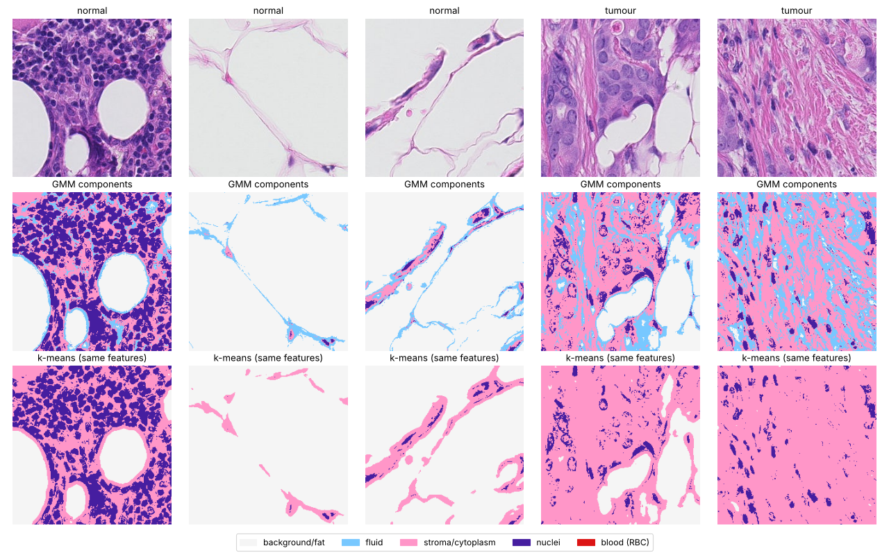
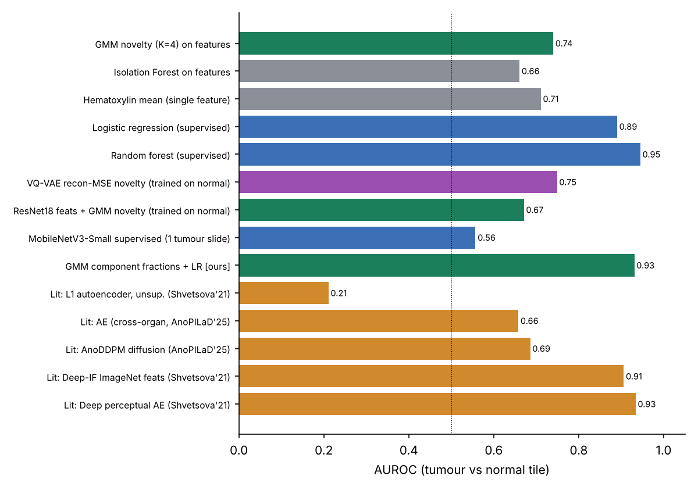
⚡ Edge deployment
| Component | ms / 256² tile (4-vCPU, no GPU) | Size |
|---|---|---|
| 23 features at 128 px | 2.1 | – |
| GMM scorer (NumPy) | 0.009 | 45 KB JSON |
| VQ-VAE ONNX Runtime FP32 / INT8 | 22.9 / 22.7 | 2.9 / 0.8 MB |
| MobileNetV3-S ONNX Runtime FP32 / INT8 | 0.6 / 1.4 | 6.1 / 1.7 MB |
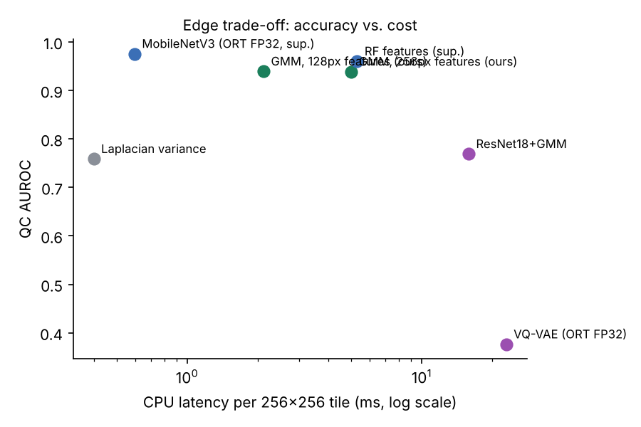
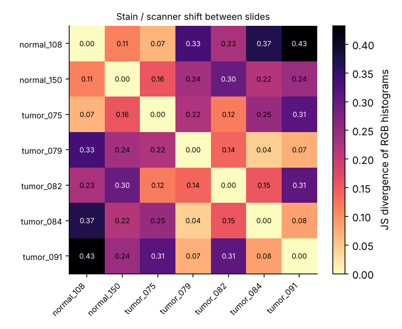
Edge = cheap, label-free, high-recall decisions next to the scanner; expensive, label-hungry decisions on the GPU. INT8 made models 3.5–3.7× smaller but not faster on this CPU — always measure on the target device.
🛰️ High-resolution segmentation (ISPRS Potsdam)
6000×6000 orthophotos → 256 px patches → D4 + photometric augmentation → U-Net with dilated bottleneck → overlap-averaged softmax stitching → 8× TTA. The same tiling/stitching logic is used for whole-slide segmentation.
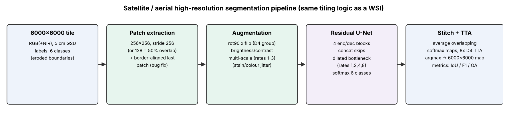
| Method | mIoU (5 cls) | mF1 | OA |
|---|---|---|---|
| K-means (k=6, unsupervised, Hungarian-mapped) | 19.8 | 32.5 | 36.1 |
| GMM-Bayes (4 comps/class) | 43.1 | 60.0 | 60.0 |
| GMM-Bayes + posterior smoothing | 48.5 | 65.2 | 64.8 |
| Random Forest (RGB features) | 47.1 | 63.9 | 62.2 |
| Random Forest (RGB + NIR/NDVI) | 50.4 | 66.8 | 65.9 |
| Residual U-Net (repo), no TTA (30 min CPU) | 58.2 | 73.4 | 72.7 |
| Residual U-Net (repo), 50% overlap stitching (30 min CPU) | 60.0 | 74.8 | 73.5 |
| Residual U-Net (repo), 8x TTA (30 min CPU) | 61.3 | 75.8 | 74.2 |
| UNetFormer R18 (literature, GPU) | 86.8 | 92.8 | 91.3 |
| ABCNet R18 (literature, GPU) | 86.5 | 92.7 | 91.3 |
YOLOv8n-seg for cars (20 min CPU fine-tune): mask mAP50 0.85, car pixel IoU 84.7% on the shared test crops.
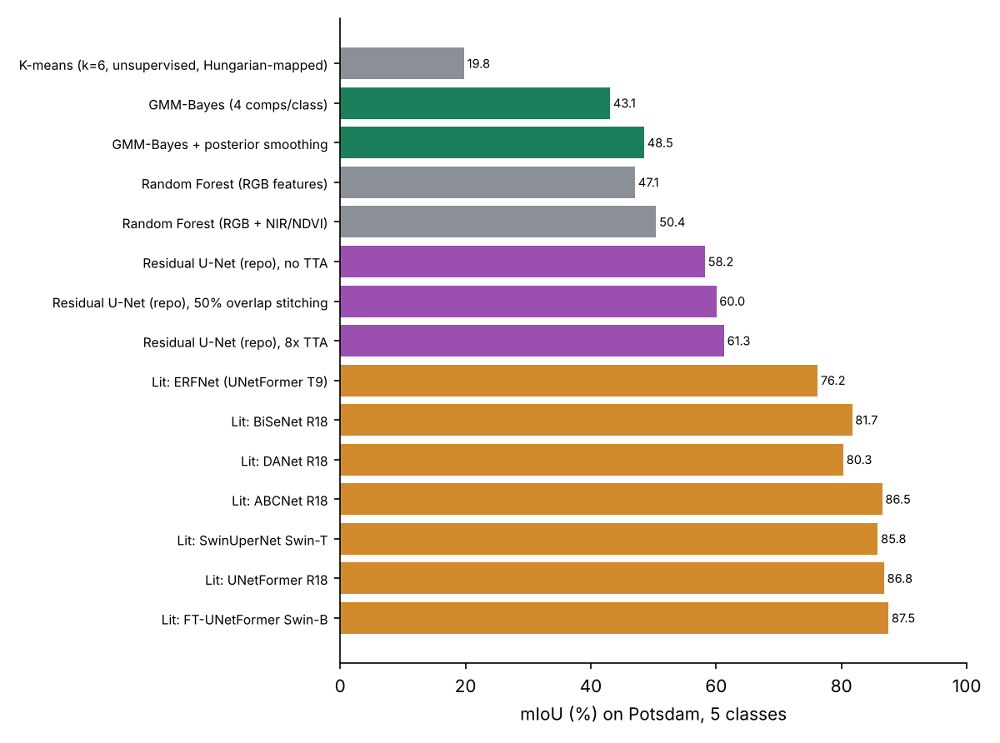
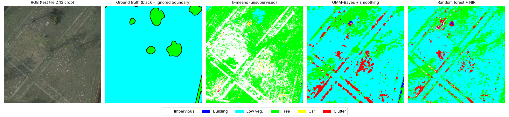
🐛 Fixes made to the original code
- Training/triage crashed: model outputs unpacked in the wrong order
tifffile.memmapcannot open real compressed WSIs → lazy zarr reader- Documented background filtering was not implemented
- No GMM in the code → GMM QC, tissue mask and components added
- Arbitrary MSE threshold → calibrated on unseen slides
- Last 112 px of every 6000-px tile never predicted (3.7% of pixels)
- Nested config →
num_classessilently 5 - "Residual" blocks are concatenations; stitching is a loop, not
scatter_nd - README IoUs not produced by any script → re-measured
🔁 Reproduce
CAMELYON16 is free on AWS Open Data; Potsdam via the Hugging Face mirror aamante/potsdam. Every experiment is a script in benchmarks/;
raw numbers are in results/*.json; the report, slides, videos and this page are regenerated by report/make_*.py. See chapter 7 of the
technical report.